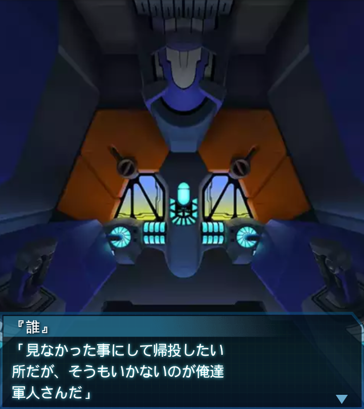
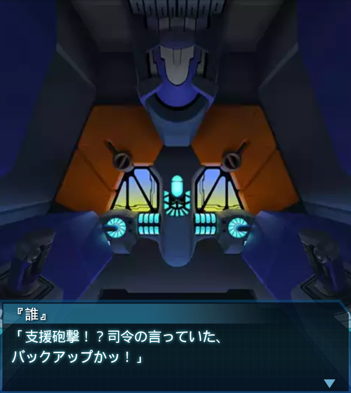

エジプト・イスマイリヤ北
イルフリーデ
「目標施設までの距離１０００！
ＢＥＴＡ、凄まじい数です！」
『誰』
「これまた報告通りの大所帯だ。
俺達の偵察部隊は実に優秀で
ありがたいことだな。まあ――」

『誰』
「見なかった事にして帰投したい
所だが、そうもいかないのが俺達
軍人さんだ」
『誰』
「この化け物の群れを突破し、お宝
を目指せ、か。相変わらず無茶を
させてくれる」
ブリギッテ
「怖気づきましたか？大尉」
『誰』
「さて、どうかな。だが、死と隣り
合わせで喜ぶ馬鹿は滅多にいない。
恐ろしいものだろう、戦争は」
ブリギッテ
「…違いない。こんな数のＢＥＴＡ
を前にして恐怖を感じない者は
いません」
『誰』
「まぁ、無茶は毎度の事か。各機！
これより無謀とも言える突入作戦を
行う！」
『誰』
「バックアップが用意されている
らしいが、無茶はするな！命と
明日を大事にしろ！全機突撃！」
『誰』
「……なんて数だ！進入ゲートまで
近寄れやしない！施設外周に
辿りつけたのも奇跡だ…！」
『誰』
「被害データ確認！二階級特進者が
出ていないのが二つ目の奇跡だ…！
くっ…撤退も視野に……ん！？」

『誰』
「支援砲撃！？司令の言っていた、
バックアップかッ！」
龍浪響
「遅くなりましたッ！！こちら
ウォードッグ１！
これより支援します！！」
千堂柚香
「『誰』大尉！私達は帝国
陸軍欧州派遣部隊ウォードッグ中隊
です」
千堂柚香
「ウォードッグ中隊及び、随行部隊
の計三個中隊、貴官の指揮下に
加わります」
『誰』
「これは心強いバックアップだ。
無事に帰投したら、香月司令に
花束でも贈ってやるか」
『誰』
「了解した、ウォードッグ！援軍
感謝する！まずは、施設侵入経路の
確保だ！続け！」
「「了解！！」」